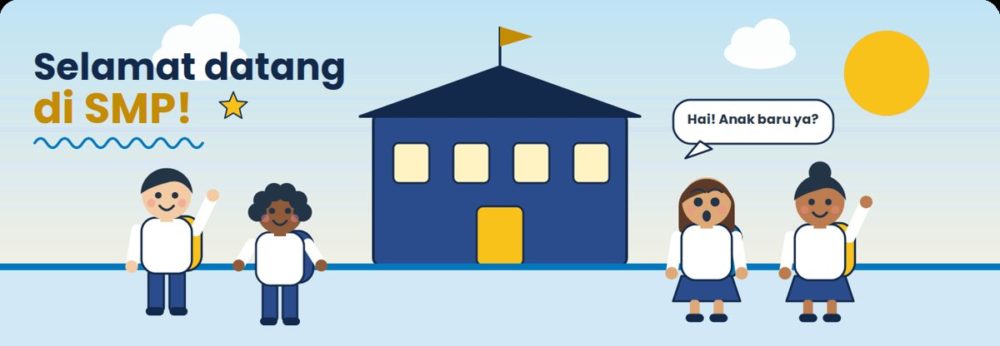
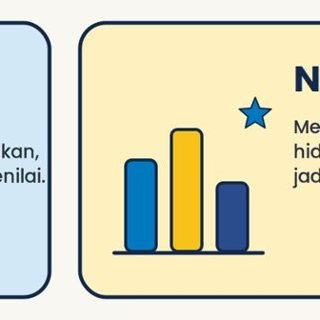
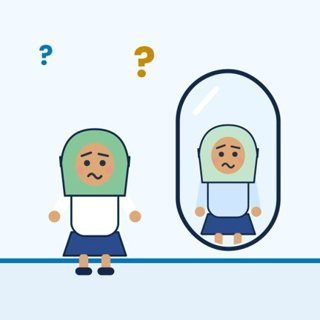
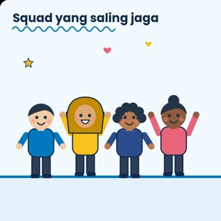
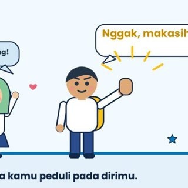
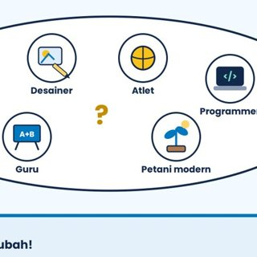

Bab 1 · Dunia SMP
Kartu refleksi dan tantangan kuis Buku BK Kelas 7. Kenalan dengan budaya, aturan, dan fasilitas sekolah barumu, plus tahu harus ke siapa saat butuh bantuan.

Halaman ini belum terhubung ke spreadsheet guru BK (config.js belum diisi).
Tantangan Kuis
Jawab semua soal, lalu periksa.
Main bab lainnya
5 bab
Paham apa itu AKM tanpa panik, lalu latihan memahami bacaan dan berpikir pakai angka.

Kenali perubahan tubuh dan perasaanmu, dan cara mengelola emosi dengan sehat.

Pertemanan yang sehat, bercanda vs bullying, batasan diri, dan berani bilang tidak.

Fakta dan mitos NAPZA, cara menolak ajakan, dan ke mana mencari bantuan.

Bedanya minat dan bakat, tipe kepribadian karier, dan tujuan SMART-mu.